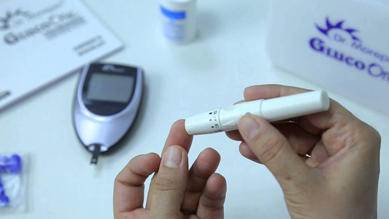

Hola a todos, con ustedes Mia Ramírez y tengo una noticia importante para todos mis seguidores. Estoy cerrando mi blog sobre la diabetes. Lo siento por mi salida inesperada, pero tengo una razón realmente importante: ya no soy una diabética más.
He dedicado 4 años a este blog, compartiendo con ustedes todas las penas y alegrías de mi vida "dulce". Durante este tiempo, probé muchos sistemas de nutrición diabética, cursos de acondicionamiento físico y medicamentos hipoglucémicos. Debo decir que casi perdí la esperanza en una recuperación y de repente la suerte se volvió hacia mí. Pero hablaré de todo en orden. Hoy les contaré mi historia.
Cómo el mundo se puso al revés
Nunca he sido flaca. Por supuesto, no comía hasta sentir náuseas. Pero entre ver una serie de televisión con unas buenas papitas fritas y correr, por supuesto, escogía la primera. Era mi ritual dominical.
Había otros dos diabéticos en mi familia, papá y abuela: ambos me advirtieron de lo que podría ser mi descuido. Pero no creía que hasta los 50 pudiera tener ese diagnóstico. Resultó que me equivoqué.
A los 27 años me diagnosticaron diabetes tipo 2. Todo comenzó de un modo bastante inofensivo: comencé a tener problemas para dormir, me cansaba más rápido. Sentía agotamiento, aguantaba peor las cargas que antes no me causaban mucho esfuerzo. Entonces pensé que el problema era el estrés, trabajar con un horario anormal. Pero la medición de glucosa puso todo en su lugar: 11.7 en ayunas.
Cómo busqué una solución
Los médicos y los familiares afirmaron al unísono que lo mejor que podía esperar era entrar en un estado de compensación. Esto es cuando el azúcar se mantiene en niveles normales, pero es necesario seguir una dieta y un régimen de ejercicio para que no suba más.
Pero no iba a rendirme. Decidí que aunque nunca pudiera olvidarme de la diabetes, al menos encontraría una manera de disfrutar la vida que tengo. Seleccionaría un régimen nutricional que incluyera platos sabrosos y saludables, planificaría ejercicios para no rendirme. Quería vivir como una persona normal.
Con ese deseo comenzó mi blog.
Dietas
Decidí comenzar con la comida, ya que ahí era donde estaba el problema inicial.
No me fue bien con la dieta tradicional baja en calorías, resulté ser alérgica a todos los productos dietéticos conocidos como el apio, las zanahorias y las manzanas. Entonces, además de los síntomas de la diabetes, también tuve problemas con la piel. La vida tiene un extraño sentido del humor: nunca tuve brotes, como por el chocolate.
He estudiado diferentes sistemas para controlar la alimentación. Rápidamente me aseguré de que las "proporciones de carbohidratos" era una clasificación obsoleta. Incluso con un recuento claro, el azúcar en la sangre subía a casi 19 después de cada comida.

El índice glucémico resultó ser un esquema más funcional, con él al menos no me sentía en peligro por cada bocado que comía. Pero seguía siendo difícil porque estaba acostumbrada a una dieta muy diferente. Y lo peor, todavía no podía perder peso. Así que no tenía más remedio que hacer ejercicio.
Ejercicio
Seriamente aterrorizada por mi diagnóstico, comencé a entrenar: sentadillas, abdominales, estiramientos, saltar la cuerda. Tres veces a la semana después del trabajo, tomaba mi mochila para el gym y me dirigía al parque porque no tenía mucho espacio para hacerlo en casa.
Muy pronto resultó que debido a esto, mi apetito aumenaba repetidamente. Ya pasé todo el día con una ligera sensación de desnutrición, pero después del entrenamiento, literalmente, me sentía mal. Más de una vez, cuando volví a casa, arrasé los estantes y comí todo el contenido del refri.
No dieron resultados los programas para perder peso, cursos y complejos de ejercicios, solo me llevaron a comer en exceso compulsivamente.
Me avergonzaba escribir sobre esto antes, pero hoy me atreví. Quiero que sepas: este hambre brutal no es motivo de culpa, es típico de los diabéticos. Así que, por favor, no te consideres débil. Luchar contra la enfermedad requiere valentía.
Empeoraba
Mientras mascaba pepinos mientras soñaba con una porción de papas fritas, mi cuerpo no se sentía más saludable. La diabetes desencadenó una reacción en cadena que afectó a todo mi cuerpo.
No fue solo por el exceso de peso, comencé a sentir entumecimiento periódicamente en mis piernas. No presté atención de inmediato, pero cuando me di cuenta del problema, me horroricé. No estaba lista para estar en silla de ruedas a los 30 años. Una cosa estaba clara: yo misma no podía resolver este problema, necesitaba un buen médico.
Fui una de las clínicas privadas. Me diagnosticaron nerviosismo y me recetaron otro medicamento hipoglucémico, más a menudo algo basado en metformina. Por supuesto, esas cosas no servían. Honestamente, para mí, las prescripciones se han convertido en un indicador de la competencia del médico: si un médico prescribe medicamentos obsoletos con un montón de efectos secundarios, entonces no se puede confiar en él.
Algunos especialistas sugirieron beber magnesio para fortalecer los nervios y lidiar con el desarrollo del pie diabético. Pero no dio resultado.
Punto de inflexión
Cuando me di cuenta de que ya no podía asistir al trabajo como de costumbre, decidí hablar con el jefe. Él y yo teníamos una buena relación, así que vine y le dije honestamente lo que estaba pasando.
Me escuchó y sugirió lo siguiente: si voy a ver a un médico que él me aconseje y esto no ayuda, entonces me pagará una buena indemnización por retiro como compensación. Parecía que estaba muy seguro de que tenía razón. Y las condiciones eran ... generosas. Por supuesto que lo escuché.
El endocrinólogo que me recomendaron en el trabajo resultó ser un especialista bastante joven. Examinó cuidadosamente mis quejas, hizo un chequeo rápido y luego comenzó una conversación. Dijo que solo tenía una idea de cómo ayudar en esta etapa del desarrollo de la enfermedad.
Sabía que el Instituto de Investigación Estadounidense había lanzado un nuevo remedio para la diabetes hace algún tiempo, pero aún no lo hemos vendido. La única opción de trabajo en ese momento es participar en estudios que ayuden a certificarlo en el territorio mexicano.
Y yo acepté.
Es un remedio natural para combatir la diabetes. Los expertos dijeron que es radicalmente diferente de otros medicamentos por su biodisponibilidad: los componentes naturales actúan en un complejo y no causan efectos secundarios. Aunque honestamente, estaba tan asustada que estaba lista para cualquier cosa.

Pasé todo este tiempo en el hospital para que los médicos pudieran verificar mi condición en cualquier momento. Tomé diariamente, dos veces al día antes de las comidas. El primer efecto del remedio fue inesperado: tuve un mejor sueño, me hizo más alerta. Entonces sentí que regresaba la salud de mis piernas. El hormigueo, la sensación de hinchazón y frío en los pies desaparecieron.
Ya estaba contenta con los resultados, pero resultó que eso no era todo. Empecé a bajar de peso. ¡En un mes, perdí casi 10 kilos! Con el peso se fue la falta de aliento desagradable, sudoración y muchos otros problemas.
La investigación tomó seis meses, después del curso todavía tenía que visitar a los médicos regularmente, tomar pruebas y pasar chequeos. También tenía un diario de observación, pero tuve que entregarlo a los tutores.
Un final feliz
Después de este periodo, puedo decir con confianza que me había recuperado. Ahora mis números no suben por encima de 7.6, incluso después de comer. Me refiero a cualquier comida.
Probablemente hayas adivinado que comí lo primero que hice cuando salí de la clínica. Pues un chorro de papas fritas. Y ahora no me avergüenzo de eso. Me di cuenta de que amar la comida es normal. Es anormal cuando el cuerpo no puede absorber adecuadamente los alimentos.
Entiendo que hay pocos como yo. La mayoría está segura de ser culpable de su desgracia. Se castigan con dietas y no creen que se pueda cambiar todo.
Pero espero que aún queden aquellos que viven con la esperanza de curarse. Y por eso, comparto con ustedes (enlace al sitio web oficial) . Que yo sepa, el remedio aún no ha llegado a las farmacias, y con la diabetes, la espera es un lujo que no podemos permitirnos. Además, el fabricante realiza regularmente promociones, y ahora se puede comprar con un descuento del 50%.
Dense prisa, los terminos son vigentes hasta 15.06.2022!
Y así yo me despido. Esta fue mi última publicación sobre la diabetes. ¡Mia Ramírez estuvo contigo, por última vez! ¡Les deseo pura felicidad y buena salud!
Me aparté un tratamiento completo y luego le compré a mi hermana. Me temo que cuando llegue a las farmacias, los precios subirán cañón.
Tengo diabetes tipo 1 y el médico me aconsejó como terapia de mantenimiento. Mi salud mejoró después de una semana de admisión.
Lo siento mucho por ustedes. Y la diabetes a mi me hizo perder la vista. Pensé que tendría que renunciar, pero mi hijo me compró . Me ayudó.
Ya lo ordené, el operador dijo que pasado mañana llegará el remedio por correo. Muy cómodo.
También me diagnosticaron diabetes temprano. Ya me he resignado a que estaré a dieta por el resto de mi vida. Pero recientemente me recomendaron . Espero que ayude.
Mi esposa y yo reservamos un tratamiento para dos a la vez. Nos dijeron por teléfono que pronto dejarían de recibir solicitudes para el lote en promoción, así que démonos prisa.
He estado viviendo con diabetes por 20 años. Pero aún así decidí intentarlo, de repente ayude. Ando esperando mi paquete.
La diabetes me agarró a mí de sorpresa, nunca fui gordita, no tenía ese hábito de comer. El problema estaba en mi sistema endocrino.
Acudí a un buen médico y me aconsejó . En unos pocos meses de beberlo, todos los indicadores volvieron a la normalidad.
No le presté atención a mi salud durante mucho tiempo y terminé en el hospital. La diabetes afectó seriamente mi bienestar, y solo entonces caí en cuenta. Un día, mi nieta me trajo del extranjero, y realmente me sentí mejor. No dejé de hacer dieta y correr hasta ahora, pero de todos modos, el azúcar no sube en absoluto por encima de 10.
Tenía problemas hepáticos por la diabetes. Mi hijo me llevó de una clínica a otra hasta que uno de los médicos me aconsejó . Y esto es lo que te diré: es mejor beber un remedio caro y no tener que gastar toda tu lana en médicos y pruebas durante años.